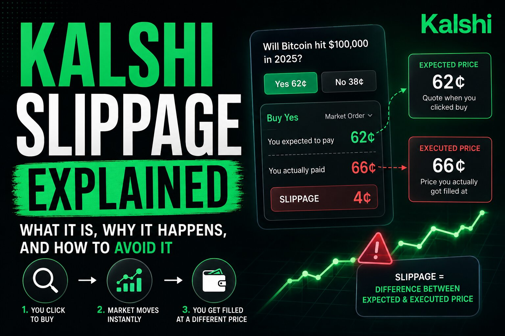

Kalshi Slippage Explained: Why Your Fill Price Isn't the Quoted Price

The short answer
Slippage is the gap between the price a Kalshi order book shows you before you trade and the average price you actually pay once your order is filled. It happens because a market order doesn't fill at a single price — it works through the book, taking resting contracts level by level until your full size is filled or the book runs out. On a heavily traded market like a Fed rate decision or a major economic release, a modest order might barely move the price. On a niche or newly listed event market, that same order can leave you paying several cents more per contract than the top-of-book quote suggested. Knowing your real slippage is what separates a strategy that looks good in theory from one that actually holds up once execution costs are counted.
Why slippage happens on Kalshi's order book
Kalshi runs a central limit order book, and every contract trades in whole cents between 1¢ and 99¢. What traders call a "market order" is really a marketable limit order — one priced aggressively enough to sweep through whatever Yes or No contracts are already resting in the book. Liquidity sits in discrete price levels: some number of contracts available at the best price, more at the next cent, more after that. If your order is larger than what's resting at the top level, it automatically continues into the next level, and the next, until it's filled. Because Kalshi's tick size is a full cent rather than a fraction of one, each level you walk through can represent a meaningfully bigger price jump than on markets with finer pricing. The blended average price you end up paying, compared with the best price showing when you placed the order, is your slippage.
A concrete example
Say the best offer on a Yes contract is 32¢. That's the quote you see. But only 400 contracts are actually resting at 32¢, another 600 at 33¢, and you're trying to buy 2,000 contracts. The remaining 1,000 have to fill at 34¢ and 35¢. Your blended average fill lands well above the 32¢ you started at — not because news moved the market, but because your own order size outran the visible depth. It's common to express this gap in basis points: the percentage difference between the reference price and your actual average fill, multiplied by 10,000. If your model expects 45 basis points of edge on a trade but execution costs you 60, you were already behind before fees came out.
What drives how much you'll pay
A handful of factors decide whether slippage on a given Kalshi trade is trivial or costly:
Market liquidity. High-interest markets — Fed decisions, major elections, headline economic data — tend to carry deep, tight books that can absorb sizable orders with little price impact. The majority of listed markets, especially long-tail or newly launched ones, are far thinner, and even a small order can move the price a full cent or more.
Order size relative to book depth. The larger your order relative to what's resting at each cent, the more levels it has to walk through, and the worse your blended average fill becomes.
Spread width and book shape. A narrow bid-ask spread with balanced depth on both the Yes and No sides signals a well-quoted market. A wide spread, or a book that's deep on one side and thin on the other, means liquidity is lopsided — cheap to trade with the deep side, expensive against it.
Maker vs. taker flow. Kalshi's fee structure and its liquidity incentive programs are built to reward resting orders that add depth, which is exactly the liquidity that keeps slippage low for everyone trading against the book. When market makers pull back — around a surprising headline or late in a fast-moving event — that depth can thin out quickly.
Timing. A surprise data print, a late shift in a game, or breaking news can empty out several price levels within seconds as makers reprice or step away, which is precisely when slippage tends to spike.
How to actually calculate it
The formula is simple. For a buy: slippage = (average fill price − reference price) ÷ reference price. For a sell, it's the reverse. The reference price is typically the best quoted price at the moment you placed the order — top-of-book ask for a buy, top-of-book bid for a sell. Converting the result to basis points (multiply by 100 for a percentage, or by 10,000 for basis points) lets you compare slippage across markets priced very differently, and lets you check whether a strategy's edge actually survives once slippage and taker fees are subtracted from it.
Market orders vs. limit orders
The biggest lever you have over slippage is order type. A market order buys you certainty of a fill but hands over control of price — you take whatever the book gives you, cent by cent, as it fills. A limit order reverses that trade-off: you name the price, the order only fills if the market reaches it, and you never pay more than you specified. Because Kalshi's fee schedule generally charges takers more than makers, placing a resting limit order instead of sweeping the book usually means lower fees on top of avoiding slippage by definition — and on markets running a liquidity incentive program, resting orders can even earn a reward whether or not they get filled. The cost is time: in a fast-moving market, a limit order that never gets touched means you simply don't trade, and there are moments when paying up for the certainty of a market order is worth it.
Practical ways to reduce slippage
A few habits make a real difference:
Check the order book, not just the last traded price. The last print tells you nothing about how much size is actually resting behind it. Look at the depth at each price level before you size a trade.
Break large orders into smaller pieces. Splitting a big position into several smaller orders spread over time lets the book refill between fills instead of getting swept through multiple cents at once.
Default to limit orders when you're not in a rush. If a trade isn't time-sensitive, naming your price and waiting is close to a free option on avoiding slippage — and it can lower your fees too.
Be extra careful on thin or newly listed markets. Long-tail event markets can have very little resting depth on either side, so even a modest position can move the price by several cents.
Watch for news-driven windows. Right after a surprising headline or data release, books can thin out fast as makers step back to reprice. Waiting a few minutes for liquidity to return often cuts execution cost meaningfully.
The bigger picture
Slippage isn't a hidden fee or a flaw in the platform — it's simply the visible cost of demanding immediate execution from a market that has finite depth at any given price. Every central limit order book behaves this way, on Kalshi or anywhere else. Traders who do best over time tend to treat the order book as information rather than just a price ticker: they size positions relative to visible depth, lean on resting limit orders when they can afford to wait, and build expected slippage into whether a trade is worth making in the first place.
Disclaimer: This post is for informational purposes only and is not financial or investment advice. Market conditions, liquidity, and fee structures change continuously — always check live prices and order book depth at kalshi.com before trading.